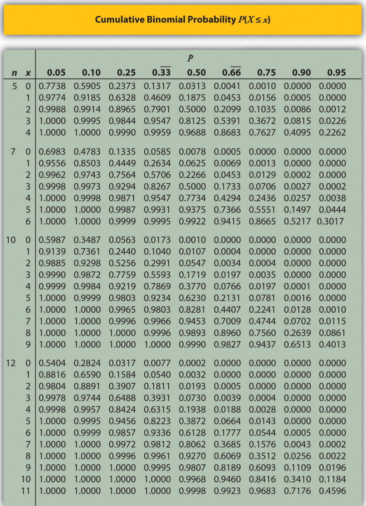

[1] 1.944444ECON 2B03, Winter 2026
Part B | Lecture 4
Chris Muris, McMaster University
Exercise: Dice difference (SZ 4.2, 23)
Two fair dice are rolled at once; \(X\) is the absolute difference in dots.
| \(x\) | \(P(x)\) | Outcomes |
|---|---|---|
| 0 | \(6/36=1/6\) | (1,1), (2,2), (3,3), (4,4), (5,5), (6,6) |
| 1 | \(10/36=5/18\) | (2,1), (1,2), (3,2), (2,3), (4,3), (3,4), (5,4), (4,5), (6,5), (5,6) |
| 2 | \(8/36=2/9\) | (3,1), (1,3), (4,2), (2,4), (5,3), (3,5), (6,4), (4,6) |
| 3 | \(6/36=1/6\) | (4,1), (1,4), (5,2), (2,5), (6,3), (3,6) |
| 4 | \(4/36=1/9\) | (5,1), (1,5), (6,2), (2,6) |
| 5 | \(2/36=1/18\) | (6,1), (1,6) |
Bernoulli examples (SZ 4.3)
Loan defaults in a small portfolio
dbinom() or pbinom()Coffee orders (binomial tables)

Boys in a family of three
Smokers in a sample of six (continued)
Defective items on an assembly line
Exercise: True/false exam guessing
You take a ten-question true/false exam and guess on every question.
dbinom(6, 10, 0.5)1 - pbinom(5, 10, 0.5)Exercise: Using binomial tables
Refer to the binomial probability table (\(n=10, p=0.5\)).
Exercise: Broken eggs
The probability that an egg in a carton of 12 is broken is 0.025.
Exercise: Mortgage approvals
A bank approves 70% of mortgage applications that meet its basic criteria. In a batch of 15 applications that meet the basic criteria, let \(X\) be the number that are approved. Assume applications are evaluated independently.
These slides started from J. S. Racine’s slides for ECON2B03 at McMaster University.
Readings are from
References